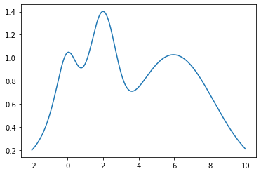
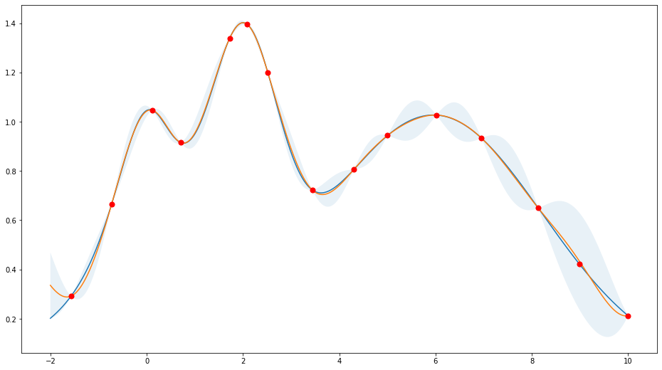

Exploitation vs Exploration¶
[1]:
%matplotlib inline
import numpy as np
import matplotlib.pyplot as plt
from bayes_opt import BayesianOptimization
Target function¶
[2]:
np.random.seed(42)
xs = np.linspace(-2, 10, 10000)
def f(x):
return np.exp(-(x - 2) ** 2) + np.exp(-(x - 6) ** 2 / 10) + 1/ (x ** 2 + 1)
plt.plot(xs, f(xs))
plt.show()

Utility function for plotting¶
[3]:
def plot_bo(f, bo):
x = np.linspace(-2, 10, 10000)
mean, sigma = bo._gp.predict(x.reshape(-1, 1), return_std=True)
plt.figure(figsize=(16, 9))
plt.plot(x, f(x))
plt.plot(x, mean)
plt.fill_between(x, mean + sigma, mean - sigma, alpha=0.1)
plt.scatter(bo.space.params.flatten(), bo.space.target, c="red", s=50, zorder=10)
plt.show()
Acquisition Function “Upper Confidence Bound”¶
Prefer exploitation (kappa=1.0)¶
Note that most points are around the peak(s).
[4]:
bo = BayesianOptimization(
f=f,
pbounds={"x": (-2, 10)},
verbose=0,
random_state=987234,
)
bo.maximize(n_iter=10, acq="ucb", kappa=0.1)
plot_bo(f, bo)

Prefer exploration (kappa=10)¶
Note that the points are more spread out across the whole range.
[5]:
bo = BayesianOptimization(
f=f,
pbounds={"x": (-2, 10)},
verbose=0,
random_state=987234,
)
bo.maximize(n_iter=10, acq="ucb", kappa=10)
plot_bo(f, bo)

Acquisition Function “Expected Improvement”¶
Prefer exploitation (xi=0.0)¶
Note that most points are around the peak(s).
[6]:
bo = BayesianOptimization(
f=f,
pbounds={"x": (-2, 10)},
verbose=0,
random_state=987234,
)
bo.maximize(n_iter=10, acq="ei", xi=1e-4)
plot_bo(f, bo)

Prefer exploration (xi=0.1)¶
Note that the points are more spread out across the whole range.
[7]:
bo = BayesianOptimization(
f=f,
pbounds={"x": (-2, 10)},
verbose=0,
random_state=987234,
)
bo.maximize(n_iter=10, acq="ei", xi=1e-1)
plot_bo(f, bo)

Acquisition Function “Probability of Improvement”¶
Prefer exploitation (xi=0.0)¶
Note that most points are around the peak(s).
[8]:
bo = BayesianOptimization(
f=f,
pbounds={"x": (-2, 10)},
verbose=0,
random_state=987234,
)
bo.maximize(n_iter=10, acq="poi", xi=1e-4)
plot_bo(f, bo)

Prefer exploration (xi=0.1)¶
Note that the points are more spread out across the whole range.
[9]:
bo = BayesianOptimization(
f=f,
pbounds={"x": (-2, 10)},
verbose=0,
random_state=987234,
)
bo.maximize(n_iter=10, acq="poi", xi=1e-1)
plot_bo(f, bo)